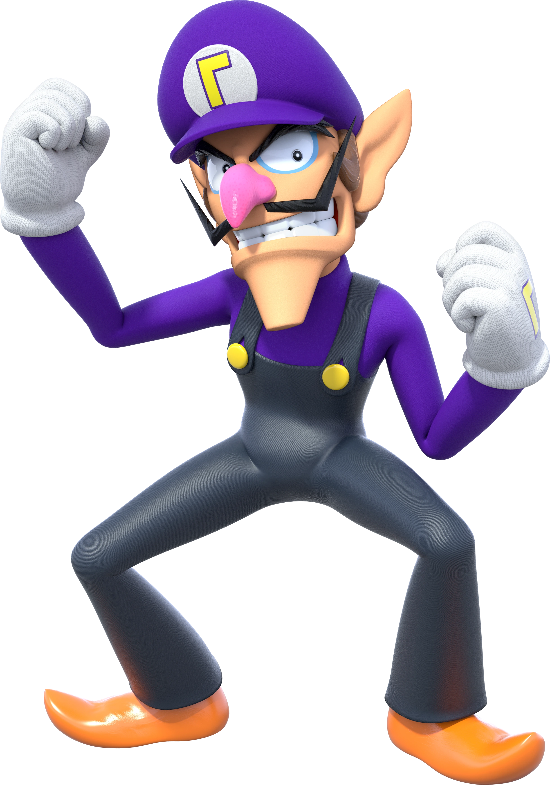

Waluigi

- Waluigi é o rival desengonçado de Luigi e parceiro malvado de Wario.
- É a forma extrema de Luigi, pois é mais alto e mais magro do que ele.
- É um homem arrogante e tem uma química ruim com os outros personagens, exceto o Wario.
- Foi apresentado oficialmente como personagem do Mario em Mario Tennis.
- Apesar de suas maldades, também participa das muitas aventuras do Mario e se mostra como um excelente dançarino no jogo Mario Golf: World Tour quando consegue um Birdie ou um Eagle.
- Seus poderes tem mais a ver com a sua habilidade de dançar, nadar pelo ar, eletricidade e raios.
Página Anterior